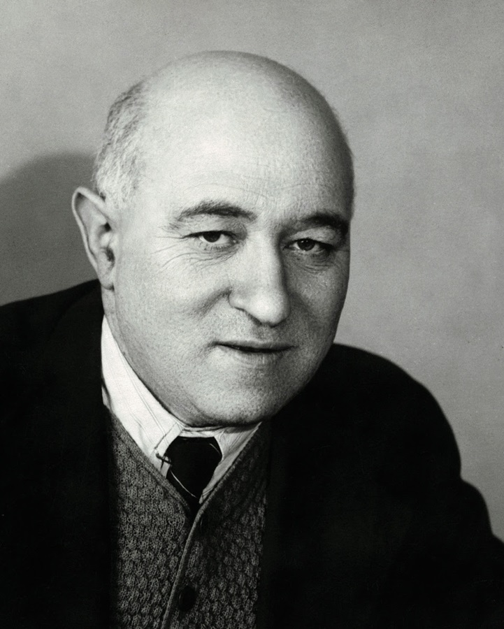
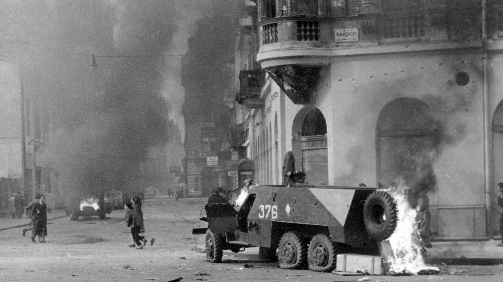
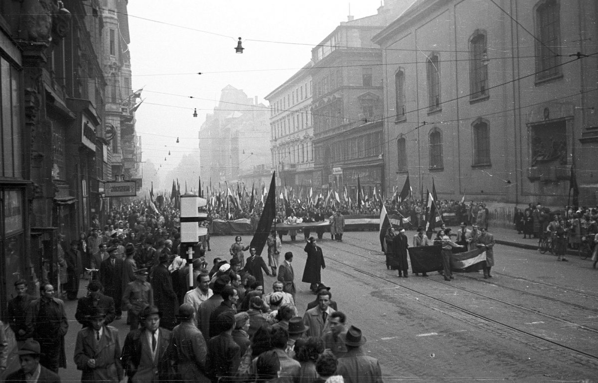
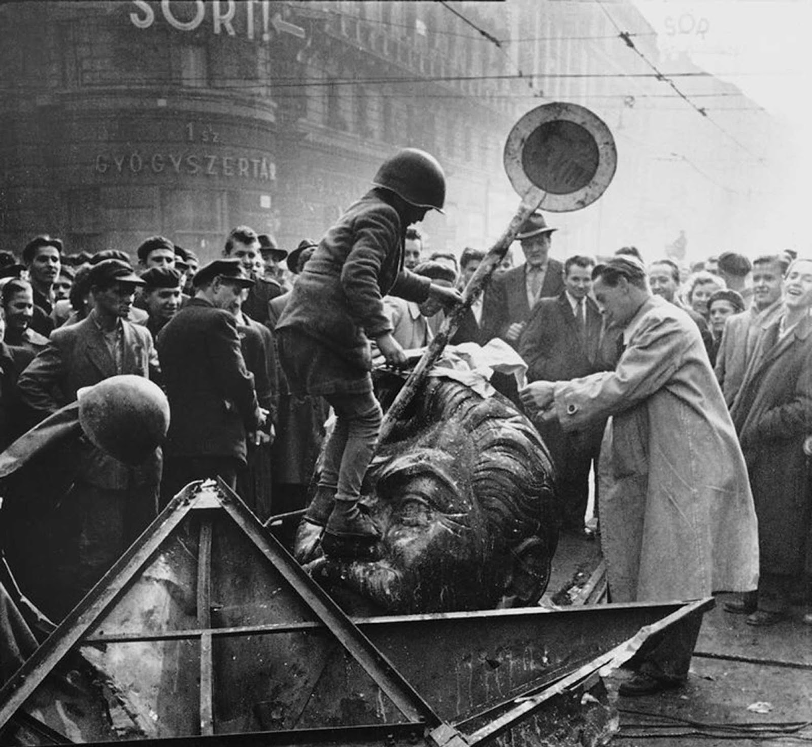
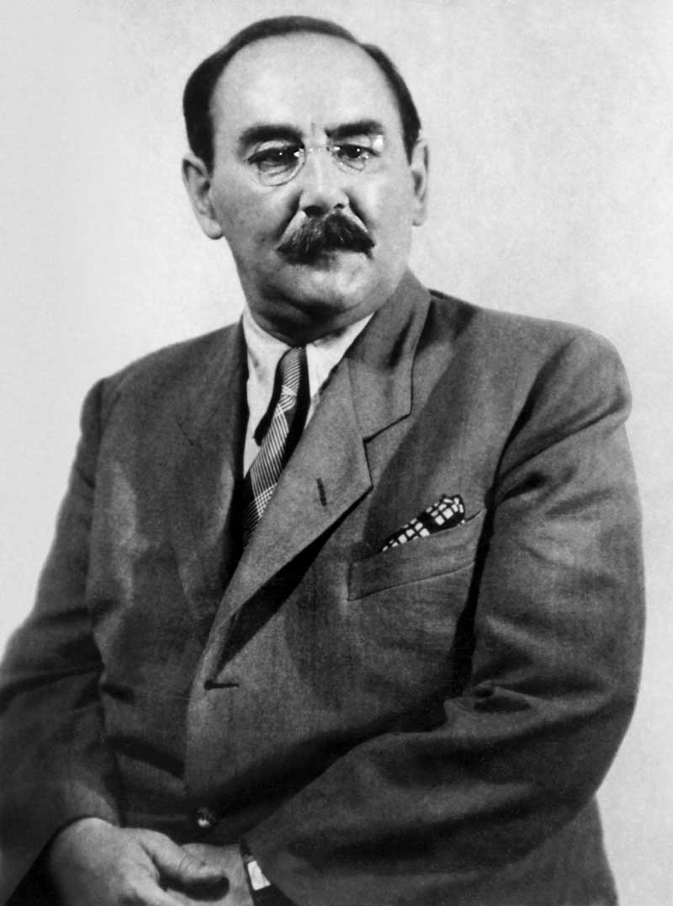
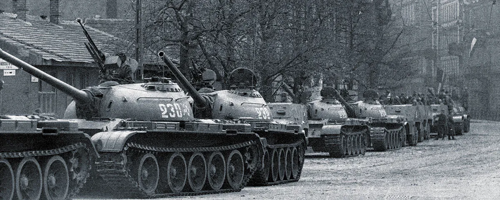
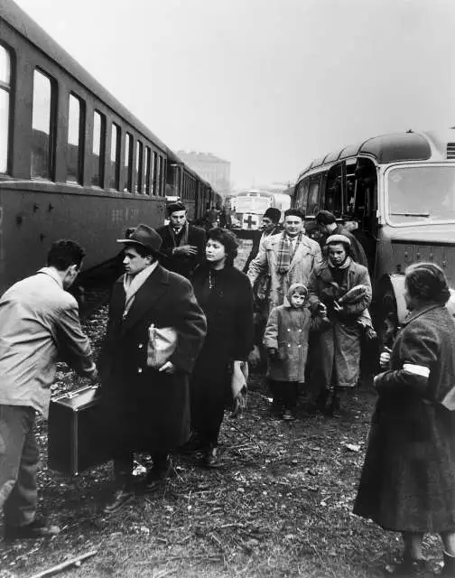

Unit 8 · Cold War Events
In 1956, the people of Hungary tried to break free from Soviet control. It did not go well for them.
After World War II ended in 1945, the Soviet Union took control of Hungary. They set up a communist government there even though most Hungarians did not want that. By 1949 Hungary was officially a Soviet satellite state, which basically means the USSR was running the country behind the scenes.
The leader they put in charge was Mátyás Rákosi and he ran the country like a dictatorship. His secret police force called the ÁVH arrested and tortured people who spoke out against the government. The economy was also doing really badly because of Soviet policies and a lot of people were struggling with food shortages.
Things started to change a little after Stalin died in 1953. In 1956 the new Soviet leader Khrushchev gave a speech where he actually admitted that Stalin had done terrible things. This gave people in Eastern Europe hope that the Soviet Union might loosen its grip a little.
"We want a government independent of the Soviet Union. This is not negotiable."
Hungarian rebel slogan, October 1956Soviet troops stay in Hungary after World War II ends. The Communist Party starts taking over.
Hungary is now officially communist and fully under Soviet control.
People across Eastern Europe start to wonder if things might get better. Imre Nagy briefly becomes Hungary's Prime Minister.
Khrushchev publicly criticizes Stalin's crimes. This gives people across the Eastern Bloc a lot of hope.
Workers in Poznan, Poland protest against the government. Hungarians are watching closely.


On October 23, 1956, students and workers marched through Budapest asking for democratic reforms and for Soviet troops to leave. The secret police fired into the crowd and things escalated very quickly from there. Within a few days the protests had turned into a full revolution across the whole country.
Over 200,000 people marched in Budapest on October 23. They pulled down a giant statue of Stalin and demanded free elections. When the secret police shot at the crowd, Hungarian soldiers actually switched sides and joined the protesters instead of stopping them.
Imre Nagy was brought back as Prime Minister. He announced that Hungary was going to leave the Warsaw Pact and become a neutral country. This was a huge deal because it meant Hungary was basically telling the Soviet Union it did not want to be under their control anymore.
The Soviet Union could not let Hungary leave because it would encourage other countries to try the same thing. The US had been telling Eastern Europeans through Radio Free Europe to stand up to communism, but when the revolution happened Eisenhower did not send any military help. Hungary was left on its own.



Click the markers to see what happened at each location. You can switch between Budapest locations and the wider Soviet Bloc view.
On November 4, 1956, the Soviet Union sent over 1,000 tanks into Budapest. The revolution was crushed in about a week. Imre Nagy was arrested, put on a secret trial, and executed in 1958.
Around 2,500 to 3,000 Hungarians were killed in the fighting. Over 200,000 people left Hungary as refugees. More than 20,000 were arrested and 350 were executed, including Imre Nagy. Hungary stayed under Soviet control and nothing really changed politically.
The crackdown made the Soviet Union look really bad to the rest of the world. It also proved that the US was not actually going to help Eastern Europeans fight back against communism even though they said they would. Hungary remembered 1956 and it helped lead to their peaceful break from communism in 1989.

